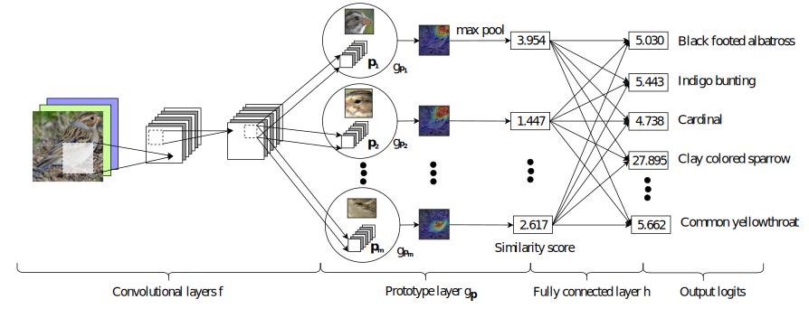
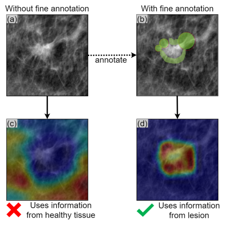
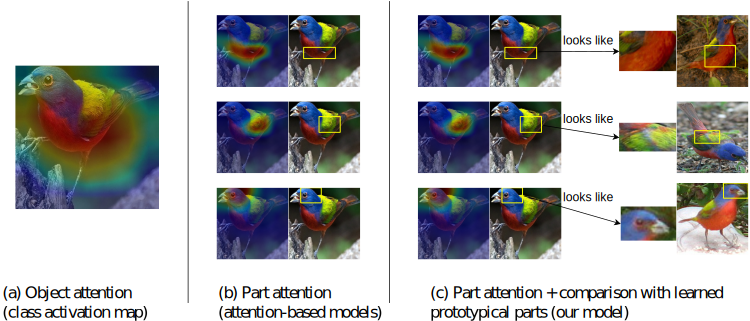
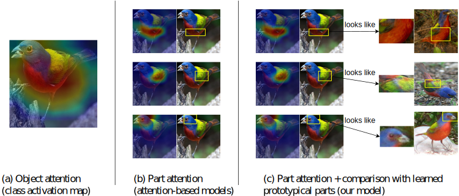
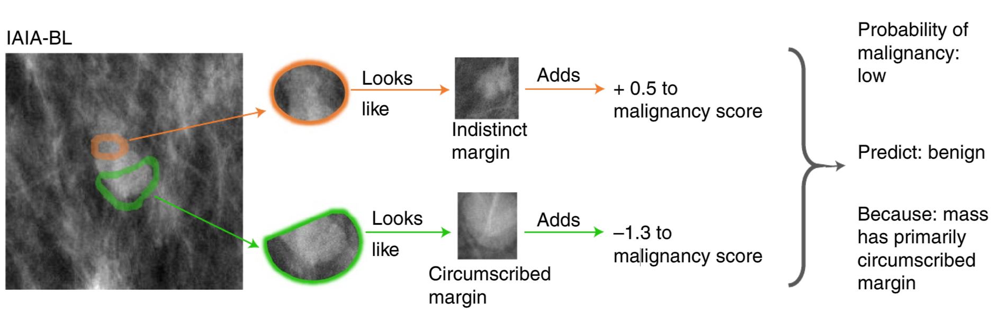
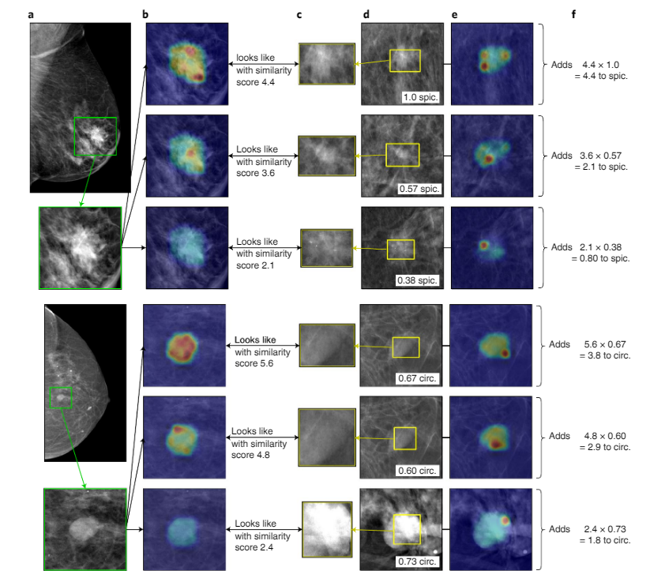

ProtoPNet and Descendants

Introduction
We present an updated version of ProtoPNet (PPN), an interpretable neural network model for image classification. ProtoPNet is an extension of a traditional Convolutional Neural Network (CNN) that uses “prototypical examples” or "prototypes" from the training data in order to create predictions that are easily interpreted by humans. By using prototypes that are able to identify characteristic features of each class, the model is able to classify a given image by explicitly connecting some part or feature of the image to some other example it has seen during training. This makes the model far more useful in decision-making settings, as humans are able to view and validate the model's decision-making process, rather than blindly putting faith in a black-box prediction. This is also vastly superior to post-hoc interpretation of models, which relies on attempting to find images that result in high activation after the model has been created. Instead, ProtoPNet actually incorporates a human-like reasoning process directly into its architecture, meaning that humans are able to easily understand and therefore agree or disagree with the network's findings. The model works by first taking a CNN without its final predictive layer to create a feature space from the original images, and then we train to find useful prototypes from this feature space. Similarity scores between the feature space of a given image and each prototype are calculated, and these values are pooled and sent into a final layer that outputs a class prediction. This version of ProtoPNet has some optional extended functionality from two other related papers. One such addition is a deformable version of ProtoPNet, which allows components of each prototype to be displaced around an image and therefore create more robust prediction capabilities. We also added functionality to use finely annotated data as a way to force the model to learn prototypes that are related to parts of the image that we know to be relevant, rather than creating prototypes on irrelevant background information. This is particularly important in settings where the background may contain artifacts of data collection and interfere with the actual decision-making process, such as in medical settings.
ProtoPNet Architectures
Original ProtoPNet:
This is the architecture of the original ProtoPNet model.
Convolutional Backbone
Going from left to right, we first see that an input image is fed into a pretrained CNN, such as VGG. This CNN has its final predictive layer removed, so it simply acts as a function $f$ that maps from images to a latent space, creating a tensor of useful features from an input image. For example, a 224x224x3 image (with the 3 representing the 3 color channels) may be convolved down to a 7x7x512 "image" by the CNN, where the 512 represents the results of multiple convolutional filters being applied to the image. This tensor is what we refer to as the "latent representation of the image" or "transformed image", and it is perhaps best thought of as a 7 by 7 array of vectors in $\mathbb{R}^{512}$.
Prototypes
Each class is assigned a set number of prototypes, and each prototype is randomly initialized. Prototypes in this case are simply vectors that live in the same space as the "pixel" vectors produced by the CNN, with dimension $d$. As prototypes are just represented as a single vector in the PPN case, the squared $L^{2}$ norm (the squared Euclidean distance) between each prototype and every output "pixel" vector from the CNN is calculated and inverted to obtain a similarity score. In the above examples, that means each prototype calculates 7x7 = 49 similarity scores for any given image. The formula for the inversion to obtain the similarity score is as follows: $$\log\left(\cfrac{||z-p_{j}||_{2}^{2}+1}{||z-p_{j}||_{2}^{2}+\epsilon}\right)$$ Where $z$ is the vector, $p$ is the prototype, and $\epsilon$ is a small number to avoid division by zero ($10^{-5}$ was used). The log is applied to the entire expression to avoid numerical overflow issues and keep the similarity scores relatively bounded. This entire process is referred to as the function $g$, which maps from the $\eta_1 \times \eta_2 \times d$ trasformed image tensor to a $\eta_1 \times \eta_2$ array of similarity scores for every single prototype.
Pooling and Output
After the array of similarity scores is calculated for a given prototype, only its maximum similarity score over the entire image is sent to the next layer via a max pool. This can be generalized to a top-k average pool by changing the k hyperparameter from its default value of 1. Increasing k during training has led to increases in predictive power even when k is decreased to 1 during inference. These pooled values are then sent to the final layer. The final layer is fully connected and has no activation function, but has normalized outputs using the softmax function: $\cfrac{e^{q_{k}}}{\sum_{k\in K}e^{q_{k}}}$ and thus acts as a multi-class logistic regression. This final output layer is described as the function $h$ and is used to create final "probabilities" for each class so that a prediction can be made based on whichever logit is highest.
Deformable ProtoPNet:
.svg)
This is the Deformable ProtoPNet (DPPN) Architecture.
Convolutional Backbone
DPPN works by taking a larger prototype, such as a 3x3, and allowing each part of the 3x3 to "deform" and move around the image via offsets. Note that the start of the architecture is identical to that of the original ProtoPNet; that is, we still use a pre-trained CNN to create the latent representation from an image. This transformed image is represented as $z$ and has dimensions $\eta_1 \times \eta_2 \times d$. Each individual $d$-dimensional vector in this tensor is represented as $z_{a,b}$ where $(a,b)$ is the spatial location of the vector within the tensor. This is still referred to as the function $f$.
Deformable Prototypes
The most important changes in DPPN are the generalization of prototypes and the addition of offsets.
In the original architecture, prototypes consisted of only one vector, but now we consider an array of
vectors (i.e., a tensor).
Each prototype tensor is labeled by $(c,l)$ where $c$ represents the class the prototype belongs to and $l$
represents an index number within that class.
The notation for the prototypes and their prototypical parts is as follows:
For a given prototype tensor $p^{c,l}$ with dimensions $\rho_1 \times \rho_2 \times d$, each prototypical
part within the prototype tensor is
a vector with dimension $d$ and is represented as $p_{m,n}$.
The other major addition in DPPN are the offsets that allow the prototype to deform.
The offsets are generated by a function $\delta$ that maps from the transformed image space $z$
to an offset space where every spatial position $z_{a,b}$ has $\rho_1 \times \rho_2$ offset pairs
$(\Delta_1, \Delta_2)$,
which represent a vertical and horizontal displacement
for each prototypical part $p_{m,n}$ in $p$. This means that for every position in the transformed image,
there is an array of displacements that is
exactly as big as the size of the prototypes. Every prototype that is checked against that position is
therefore deformed in the exact same way, as the
displacments belong to $z_{a,b}$, not the prototypes.
In DPPN, we used two convolutional layers that were trained
along with the prototypes to create the offset pairs, but
there are many possible functions that could be used.
.svg)
The offsets created by $\delta$ can be
integer valued or fractional. If the offsets are fractional, they must be interpolated with a special
function so as to preserve the length of the vectors, the importance of which is detailed in the next
section.
The interpolation function is
described below:
Let $z_i$ with $i \in 1,2,3,4 $ be vectors with length = $\frac{1}{\rho}$, and let $z_{i}^{2}$ represent the
element-wise square of the vector.
Assume the four vectors $z_i$
would naturally represent the 4 corner values around a point we are attempting to interpolate in $z$. With
constants $\alpha \in [0,1]$ and $\beta \in [0, 1]$
representing the
fractional distances horizontally and vertically from one corner, the following formula will interpolate
between the points, essentially finding
the hypersphere that goes
through all vectors and identifying some point on said hypersphere between the 4 corner vectors:
$$z_{interp}=\sqrt{(1-\alpha)(1-\beta)z_{1}^{2}+(1-\alpha)\beta
z_{2}^{2}+\alpha(1-\beta)z_{3}^{2}+\alpha\beta z_{4}^{2}}$$
Normalization
In DPPN, we also add a normalization step to ensure that each prototype tensor, when stacked, creates a unit
vector. This stacking operation is completed by simply appending one vector to another, creating a new
vector with dimension = $\dim(v_1) + dim(v_2)$.
Note that this step occurs directly
after the CNN, and before any evaluation or offset generation. We normalize every prototypical
part $p_{m,n}$ to
have length = $\frac{1}{\sqrt{\rho}}$, where $\rho = \rho_1 * \rho_2$, which is just the number of
prototypical
parts contained within the prototype. We also normalize
all of the vectors that make up the image feature space tensor to the same length, so that when compared,
both the image tensor and the prototype tensor can be
represented as stacked vectors with length = 1, making them unit vectors. This is useful in calculating
similarity scores.
After a vector has been normalized we add a hat to it for notation, meaning we go from the latent
representation of an image $z$ to the normalized version $\hat{z}$,
and the prototypes $p$ become $\hat{p}$ after normalization. The latent space tensor at position $(a,b)$ is
represented by $\hat{p}_{a,b}$, and so on.
There are issues with attempting to normalize vectors that may
evaluate to 0, especially when considering
padding (trying to get values from vectors outside of the transformed image due to deformations). This is
because vectors of 0 will result in a division by zero
error. These zero values cannot be ignored either,
as that would mean that
the stacked tensors would no longer represent unit vectors, which was the entire point of normalization. As
a result, an extra channel is added to every
prototype tensor and the image tensor with a
uniform small $\epsilon$
value of $10^{-5}$, so if the original $d$ is 512, for example, we add an extra dimension to every vector,
making it 513.
This ensures that the theoretical framework described above is always guaranteed to
work, as no vector is ever equal to 0.
Similarity Score and Output
Finally, the similarity score $g$ for a given prototype $\hat{p}^{(c,l)}$ at a given point in the feature
space
$\hat{z}^{a,b}$ is as follows:
$$g(\hat{z})^{c,l}_{a,b} = \sum_{m}\sum_{n}\hat{p}_{m,n}^{(c,l)}\cdot\hat{z}_{a+m+\Delta_1,b+n+\Delta_2}$$
When we stack the vectors that make up each tensor into one vector each, however, instead of summing as
above, we end up with a unit vector
(guaranteed by our normalization step) of dimension $\rho d$,
meaning that we can write the similarity as follows:
$$g(\hat{z})^{c,l}_{a,b} = \hat{p}^{(c,l)}\cdot\hat{z}_{a,b}^{\Delta}$$
You will notice that this is essentially just a cosine similarity, as the magnitudes of each vector are
guaranteed to be one due to our normalization step. All vectors live on the $\rho d$ dimensional unit
hypersphere, and the distance between any two vectors can
simply be represented via the cosine of the angle between them.
Finally, we can express the similarity between an entire image tensor $\hat{z}$ and a prototype
$\hat{p}^(c,l)$ by simply incorporating the max-pooling
step here. Note that this formulation would therefore NOT work if using top-k average
pooling.
$$g(\hat{z})^{(c,l)} = \max_{a,b} g(\hat{z})^{(c,l)}_{a,b}$$
After the similarity score is calculated, the rest of the model is identical to the original PPN model. The
similarity scores are max-pooled (unless incorporated as above), sent to
a fully connected
layer, soft-maxed, and used to create predictions. This final layer can also be referred to as the function
$h$, complementing the CNN's $f$ and the
aformentioned $g$.
Training a ProtoPNet
Original ProtoPNet:
There are technically 4 stages of training to ProtoPNet: Stochastic Gradient Descent, Projection, Convex Optimization, and Pruning.
Custom Loss Function
ProtoPNet has a custom loss function with a cross-entropy loss and two regularization terms. The cross
entropy term penalizes
incorrect predictions, while the regularization terms enforce specific properties about the
prototypes. The formulation for cross entropy is as follows:
$$\textrm{CE}=\sum_{i=1}^{N}-\log\cfrac{\exp(\sum_{c,l}w_{h}^{^{((c,l),y^{(i)})}}g(i)^{^{(c,l)}})}{\sum_{c^{\prime}}\exp(\sum_{c,l}w_{h}^{^{((c,l),c^{\prime})}}g(i)^{(c,l)})}$$
Note that the sum $\sum_{c,l}w_{h}^{^{((c,l),y^{(i)})}}g(i)^{^{(c,l)}}$ simply calculates the logit for the
class that training image $i$ belongs to, (multiplying
the similarity by its weight, just as the final layer of the model does) while the
denominator sums over all class values, so all we need to calculate is the actual output of the model to
calculate the cross-entropy.
The first regularization term is the clustering term,
which ensures that some part of the latent representation of the image in a specific class is close to at
least one
prototype of that class. This ensures that the prototypes "cluster" around the features that belong to the
class they are assigned.
Additionally, there is a separation term that attempts to maximize the smallest distance between a prototype
NOT of the same class as
the training image and some part of the latent representation of said image. This ensures that prototypes
that
do not belong to a given class are kept
far away from the space that belongs to that class.
Both of these terms help to learn and shape the latent space
for the prototypes so as to
create distinct regions
and characteristics for each class, aiding in classification. The loss function and necessary notation are
described below:
$$\min_{P,w_{conv}}\frac{1}{n}\sum_{i=1}^{n}CrsEnt(h\circ g_{p}\circ
f(x_{i}),y_{i}) + \text{Clustering loss} + \text{Separation loss}\\
\text{where: }\\
\text{Clustering loss} = \lambda_{1}\left(\frac{1}{n}\sum_{i=1}^{n}\min_{j:p_{j}\in P_{y_{i}}}\min_{z\in
patches(f(x_{i}))}||z-p_{j}||_{2}^{2}\right)\\
\text{Separation loss} = \lambda_{2}\left(-\frac{1}{n}\sum_{i=1}^{n}\min_{j:p_{j}\notin
P_{y_{i}}}\min_{z\in patches(f(x_{i}))}||z-p_{j}||_{2}^{2}\right)$$
This essentially states that we are minimizing the cross entropy loss of the network (remember that $f$, the
CNN, feeds into $g$, the prototype layers, which feeds
into
$h$, the final layer).
The term multiplied by $\lambda_1$ is the clustering loss. The clustering
loss is
attempting to find both the prototype that belongs to the same
class as the image and the 1x1 patch in the latent representation of that image
that minimizes the squared $L^{2}$ norm between those two. It does this for every training image, and then
averages those values.
The term multiplied by $\lambda_2$ is the separation loss.
The separation loss is attempting to find both the prototype that does NOT belong to the
same class as
that of the image and the 1x1 patch in the latent
representation of that image that minimizes the $L^{2}$ norm between those two. It does this for every
training
image, averages those values, and then negates that average, adding it to the loss.
This means that a higher minimum value is actually better, which makes sense when attempting to ensure that
all
prototypes of a given class stay away from examples of that class.
Stochastic Gradient Descent
There is a preliminary "warming" stage that lasts for 5 epochs, using Stochastic
Gradient Descent (SGD). In this stage,
only the prototypes are trained, and the weights in both the CNN backbone and the final output layer are
frozen.
This essentially just allows us to get a head-start
on training the prototypes. The CNN is pretrained, so those weights are just frozen as-is,
but the final output weights are chosen in a specific way to enable us to
train the prototypes effectively; for an output logit of class $k$, any prototype also of class
$k$ will have a weight = 1. For any prototype not of class $k$, the
assigned weight will be -0.5. This is a simple and consistent configuration that makes training the
prototypes while freezing the final layer plausible, as
it rewards activation within the correct class and penalizes activation outside the correct class.
After 5 epochs, the CNN weights
are unfrozen and are
allowed to move with the prototypes. This is done to allow the latent space of the CNN to change and learn
as needed to fit the prototypes optimally.
This first step may be repeated multiple times, i.e. multiple epochs may be allowed to pass of just doing
SGD. The number of epochs is a hyperparameter
that can be set.
Prototype Projection
In this stage, prototypes are "pushed" or projected onto the nearest latent patch of the same class discovered in training as judged by the $L^{2}$ distance. This is useful for two reasons: Firstly, it enables us to explicitly connect the prototypes to an actual example found in the training data. Secondly, it ensures that the prototypes are not in some area of the latent space completely disconnected from the training data. By forcing it to be related to a training example, a prototype is able to stay in the correct "neighborhood". This step is only applied a few times during training. For example, in the Original PPN paper, this projection step was only performed at epochs 10, 20, and 30, meaning that between those times, the prototypes were allowed to move freely in space without being explicitly tied to any particular training patch. The epochs at which this step is performed are also hyperparameters.
Convex Optimization
In this stage, we freeze the prototypes and the CNN weights, and only optimize the final fully connected
layer.
Because there is no activation function and all other
weights are frozen, we are able to use convex optimization rather than gradient descent to optimize this
final layer.
This allows us to update the preset weights used in the previous
examples, and find whichever weights are optimal. We also try to force the majority of weights where the
class of the prototype does not match the output logit to be 0
(it was previously fixed at -0.5), making the weights sparse. This is because we want the model to have an
affirmative reasoning process as opposed to a negative one,
where the model chooses a class due to the presence of distinguishing features, rather than a process of
elimination where the model picks a class because it is not some
other class. Note that this step is always performed directly after the prototype projection stage. The
optimization problem solved is listed below, where k is the
class in question and j is the class of the prototype:
$$\min_{w_{h}}\frac{1}{n}\sum_{i=1}^{n}CrsEnt(h\circ g_{p}\circ
f(x_{i}),y_{i})+\lambda\sum_{k=1}^{K}\sum_{j:p_{j}\notin P_{k}}|w_{h}^{(k,j)}|$$
You can see that the Cross Entropy is still minimized, but there is an $L^{1}$ regularization term added to
ensure the aforementioned sparsity.
Pruning
After all of the above training steps have been completed, and the max epochs have been reached, a pruning step is introduced to remove prototypes that are either duplicates or ineffective. A prototype is judged as ineffective if there are an insufficient proportion of its k-nearest training patches that are of the same class. If this is the case, it implies that the prototype is too similar to other classes to be useful. Both the k and the proportion are hyperparameters. In this case, we trim all connections in the fully connected layer that are related to that prototype, remove the prototype, and redo the Convex Optimization step in order to readjust the weights in the absence of that prototype. If there are duplicate prototypes, we also trim all connections and remove the prototype, for all but one, and simply adjust the weights of the only remaining prototype by summing up the weights of all of the removed prototypes and adding. Because this does not impact the final layer, there is no need to rerun convex optimization.
Deformable ProtoPNet:
The overall structure for the training of Deformable ProtoPNet is similar, but there are some key differences in the loss function, and a slight change in the freezing of different weights. Most of the differences are a result of DPPN using cosine similarity where PPN did not.
Subtractive Margin Cross Entropy
Much like the original PPN, DPPN has a custom loss function. Instead of using cross-entropy loss, however,
we use
subtractive margin cross-entropy, which has some unique benefits in terms of enforcing separation.
The cross entropy term still penalizes
incorrect predictions, and we still have cluster and separation regularization terms. However, DPPN also has
an orthogonalization
term that encourages each prototypical part
within a prototype to be orthogonal to each other.
First is the subtractive margin cross entropy, which is defined as follows:
$$\textrm{CE}^{^{(-)}}=\sum_{i=1}^{N}-\log\cfrac{\exp(\sum_{c,l}w_{h}^{^{((c,l),y^{(i)})}}g^{^{(-)}}(i)^{^{(c,l)}})}{\sum_{c^{\prime}}\exp(\sum_{c,l}w_{h}^{^{((c,l),c^{\prime})}}g^{^{(-)}}(i)^{(c,l)})}$$
Where
$$g^{^{(-)}}(i)^{^{(c,l)}}=\begin{cases}
g(\hat{z}^{^{(i)}})^{^{(c,l)}} & \textrm{if}\ c=y^{^{(i)}}\\
\max_{a,b}\cos(\left\lfloor \theta(\hat{p}^{(c,l)},\hat{z}_{a,b}^{^{\Delta,(i)}})-\phi\right\rfloor _{+}) &
\textrm{else}
\end{cases}$$
The term $w_{h}^{^{((c,l),c^{\prime})}}$ just represents the weight associated
with a prototype and class $c\prime$ in the final fully connected layer, $\lfloor()\rfloor_{+}$ is the ReLU
function,
and $\phi$ is a constant margin fixed at 0.1. The intuition for thinking about the cross entropy is as
follows:
First, note that we sum over all of the prototypes in the model. We know that maximizing the numerator is
ideal and leads to a lower cross entropy.
If a prototype belongs to the same class as the training example being examined, then g will return the
similarity score between that image
and the given prototype. Ideally, we want this to be as high as possible, as that would help increase the
numerator. However, if the classes do not match,
then the g does not just return the similarity. Instead, the angle between the two vectors (in this case,
$\hat{p}$ and $\hat{z}_{a,b}$ are both unit vectors,
meaning we can
just use the dot product) is calculated, and we subtract from the angle that small fixed margin inside the
$\cos$ function. This is also why the ReLU function
is needed as a way to floor the value, setting a hard minimum of 0. In case the angle is smaller than the
margin, a negative value would be passed to the
cosine, which would yield
very incorrect results.
The reason for
using this margin is that it artifically raises the similarity score, which means that the model will have
to overcompensate and force the vectors to be
even further apart. This essentially just helps us keep prototype vectors separated from classes they don't
belong to. Note that the
$\max_{a,b}$ is just finding
whatever $(a,b)$ position has the best match with the prototype, exactly as the normally used similarity
score does. Finally, notice that these similarity scores
are multiplied by the weight between the prototype in question and the output class. If they match, it will
be a positive number and help increase the
numerator. If they classes do not match,
then the similarity score returned by $g$ will be multiplied by a negative value, penalizing a high
similarity score with an out-of-class example,
and lowering the numerator.
Thus, we always want high similarities with prototypes of the same class, and very low similarities with
prototypes outside of the class.
Clustering and Separation Loss
The clustering term is also somewhat changed, though it still ensures that some part of the latent
representation of the images of a class is close to at least one
prototype of that class. The clustering term is defined as follows:
$$l_{\textrm{clst}}=-\frac{1}{N}\sum_{i=1}^{N} \max_{\hat{p}^{(c,l)}:c = y^{(i)}}g(\hat{z}^{(i)})^{(c,l)}$$
This function helps to ensure that there is some image patch in a class that is similar to a prototype, just
as in the PPN version.
The only major difference is that here, we are able to directly use similarity scores rather than distances,
and we also multiply this by a negative
value so as to lower the overall loss when there is a higher similarity.
Additionally, there is once again a separation term that acts to minimize the maximum similarity score
between a prototype
NOT of the same class as
the training image and some part of the latent representation of said image. This ensures that prototypes
that
do not belong to a given class are kept
far away from the space that belongs to that class. The function to describe the separation loss is shown
below:
$$l_{\textrm{clst}}=\frac{1}{N}\sum_{i=1}^{N} \max_{\hat{p}^{(c,l)}:c \neq
y^{(i)}}g(\hat{z}^{(i)})^{(c,l)}$$
This is once again analogous to the PPN version of the separation loss, but instead uses similarity scores
rather than distances.
Orthogonality Loss and Deformation Loss
Finally, DPPN adds a new kind of regularization term, called the orthogonality loss. This loss tries to
ensure that prototypical parts within a given prototype are
orthogonal to each other. The reasoning behind this is that when introducing deformable prototypes, many
prototypical parts end up deforming to be identical
to each other,
making them redundant and unoptimal, as more information could be captured with more diverse prototypical
parts. The formulation of this loss is shown below,
where $L$ is
the number of deformable prototypes in class $c$, $\rho L$ is the total number of prototypical parts from
all prototypes of class $c$, $r = \frac{1}{\rho}$,
$P^{(c)} \in R^{\rho L \times d}$ is
a matrix with every prototypical part of every prototype from class $c$ arranged as a row in the matrix, and
$I^{(\rho L)}$ is the $\rho L \times \rho L$
identity matrix.
$$l_{\textrm{ortho}}=\sum_{c}||P^{(c)}P^{(c)\intercal}-r^{2}I^{(pL)}||_{F}^{2}$$
Because the prototypical parts of a given class in a matrix are all arranged in the same row, multipying
this matrix
by its own transpose is akin to calculating an inner product between every pair of prototypical parts in
some class.
Keeping this value as close to the scaled identity matrix as possible means that we are encouraging the
prototypical parts
within a class to be as orthogonal to each other as possible; orthogonal vectors will create entries of 0.
This makes it so that prototypes themselves and
the prototypical
parts within a prototype are as different as possible, ensuring that a diverse range of the information
contained within the images is
incorporated into the model.
.svg)
Finally, the deformations themselves also have an attached regularization term. We simply want to penalize
having large deformations, as large deformations
that find places all across an image will be far less likely to be relevant; they should be roughly
clustered around their $(a,b)$ position.
Assuming that the tensor of offsets is defined by $\Delta$, the loss can be written as $l_{\Delta} =
\sqrt{\sum_{d \in \Delta} d^{2}}$.
All that being said, we now have a formulation for the total loss function:
$l = \textrm{CE}^{(-)}+\lambda_1 l_{\textrm{sem}}+\lambda_2 l_{\textrm{clst}}+\lambda_3 l_{\textrm{ortho}} +
\lambda_4 l_{\Delta}$
The $\lambda$ hyperparameters were chosen as follows: $\lambda_1 = 0.01, \lambda_2 = 0.1, \lambda_3 = 0.1$.
Stochastic Gradient Descent
The process for SGD in DPNN is very similar to that of PPN, so refer to that section for more details. The only changes are in the offset-prediction branch of the model and the warm-up process. During the warm-up stage, all weights were frozen (the CNN, the offset prediction branch, and the fully connected layer) except for the prototypes. 5 epochs of training were perfomed like this. Then, the CNN weights were unfrozen, and another 5 epochs of training were performed. After that, all weights were unfrozen and trained.
Prototype Projection
There is one main difference between the projection stage in PPN and DPPN. First, now a prototype is
projected onto some equivalent latent space
representation of the image (i.e. a 3 by 3 patch for a 3 by 3 prototype, but accounting for deformations).
Essentially, we start with some deformable
prototype, and examine all training images
of the same class. We then find the (a,b) value across all possible images that will maximize the similarity
between that particular patch and the
prototype, and then
set the prototype equal to that patch, with displacements. Note that these values will often be interpolated
due to the non-integer
deformations associated with that particular location in the image. This step was performed at epochs 20 and
30 in the DPPN model.
Convex Optimization
There are no significant differences in the implementation of the convex optimization step in PPN and DPPN. It will always occur directly after the prototype projection step.
Pruning
There are no theoretical differences between the pruning step in PPN and DPPN, although in DPPN, due to the additional regularization terms, pruning was not needed and wassimply skipped.
Fine Annotations
Fine annotations are a major contribution from the IAIA-BL model, along with the top-k average pooling
mentioned in the PPN section. In many cases, neural networks will
train on "irrelevant" background data that may
account for a large part of the variability, but not actually help in diagnosis. For example, in a
mammogram, the neural network may detect the background breast
tissue as coming from an older female, and be more likely to predict cancer, while completely ignoring
whether or not a tumor is present in the image.
Other, more egregious examples,
such as the model learning to detect what machine took the scan rather than looking at the scan itself,
present a similar issue. Therefore, having some way
to direct the neural network to focus on what is important would greatly improve the capabilities and
interpretability of the network.
While machine learning and
neural network applications often
require enormous amounts of data, making annotating every sample unfeasible, we can still use expert
annotations of the parts of an image that are important
on a small, randomly selected and balanced subset of the data as a way to improve a model's predictive
power. By adding a loss term in the model's
optimization problem that penalizes prototypes
that activate on sections of the image that are not annotated, we can force the model to learn to focus on
certain features within an image.
Then, even when presented with images that have
no fine annotations at all, the prototypes have still been forced to relate to the important features in the
data. This loss term also accounts for activation on
samples that belong to a different class from the prototype, ensuring that the prototypes do not learn
features that are common between many classes, which would
include something like healthy tissue in the mammogram example. This means that prototypes are encouraged to
represent the distinguishing features that are
highlighted in expert annotation.

The actual loss function shown below is most compatible with the PPN model; some changes to how the
similarity score is calculated would need to be made to work
within the DPPN framework, but the overall ideas and terms are still consistent.
$$\textrm{FineLoss}=\sum_{i\in
D^{\prime}}\left(\sum_{j:\textrm{class}(p_{j})=y_{i}^{\textrm{margin}}}||m_{i}\odot\textrm{Upsample}(g_{p_{j}}(f(x_{i})))||_{2}+\sum_{j:\textrm{class}(p_{j})\neq
y_{i}^{\textrm{margin}}}||g_{p_{j}}(f(x_{i}))||_{2}\right)$$
The above formula sums across all images that have fine annotation (the set $D^{\prime}$). For prototypes
for which their class is the same as the image in question,
the Hadamard Product (essentially an element wise multiplication, or multipying matrices as if you were
adding them) between the mask layer ($m_i$) and the upsampled
similarity map of the prototype and the convolutional features is computed. The similarity map is simply
just the similarity score of the prototype in question at each point in the
latent space representation of the image. It is upscaled using bilinear interpolation because the masks were
drawn on the original image, so it must be upsampled back to the size
of the original image to compute the product. The mask is such that any areas highlighted by the expert are
evaluated to 0, and all others are 1. This means that
prototypes that have high
similarity scores with areas that have a value of 1 add to the loss, while those with high similarity in
areas of 0 do not.
The second term in the formula simply sums the $L^{2}$ norms of the similarity
map for images and prototypes that do not
belong to the same class, making high similarity scores with images of a different class add to the loss.
Creating Heatmaps, Bounding Boxes, and Interpretations
Given a similarity map calculated between a prototype and a latent-space representation of an image, the
similarity map can be
upsampled via bilinear interpolation to the same size as the original image and overlaid, creating the
heatmaps you may see
in some of the images of PPN. Additionally, a given prototype is guaranteed to correspond exactly to some
actual patch of the latent space in
some real image, so it is possible to identify which image a prototype corresponds to and connect it to
some other image with a high activation as well.
This is how we can connect some part of one image to another, saying that "this" looks like "that".
Additionally, a bounding box
can be created on an image by finding the smallest possible
rectangular section that fully contains the 95th percentile and above of activation values in the image.
The same procedure can be performed for DPPN, but we simply have to account for the deformations of each
part when displaying it on the original image.
 

You can see the same process used in the IAIA-BL Model below:

Example Reasoning Processes
Original ProtoPNet:

This image demonstrates the reasoning process of the Original ProtoPNet model.
Deformable ProtoPNet:
.svg)
This images demonstrates the reasoning process of the Deformable ProtoPNet, similar in general structure to that of PPN.
IAIA-BL:
This images demonstrates the reasoning process of IAIA-BL, similar in general structure to that of PPN.
Tunable Hyperparameters and Model Options
This section will be updated with more detail as the codebase progresses.
Installation instructions
Data Preparation:
- Download the dataset CUB_200_2011.tgz from http://www.vision.caltech.edu/visipedia/CUB-200-2011.html
- Unpack CUB_200_2011.tgz
- Crop the images using information from bounding_boxes.txt (included in the dataset)
- Split the cropped images into training and test sets, using train_test_split.txt (included in the dataset)
- Put the cropped training images in the directory "./datasets/cub200_cropped/train_cropped/"
- Put the cropped test images in the directory "./datasets/cub200_cropped/test_cropped/"
- Augment the training set using img_aug.py (included in this code package) -- this will create an augmented training set in the following directory: "./datasets/cub200_cropped/train_cropped_augmented/"
Training the Model:
- In settings.py, provide the appropriate strings for data_path, train_dir, test_dir,
train_push_dir:
(1) data_path is where the dataset resides -- if you followed the instructions for preparing the data, data_path should be "./datasets/cub200_cropped/"
(2) train_dir is the directory containing the augmented training set -- if you followed the instructions for preparing the data, train_dir should be data_path + "train_cropped_augmented/"
(3) test_dir is the directory containing the test set -- if you followed the instructions for preparing the data, test_dir should be data_path + "test_cropped/"
(4) train_push_dir is the directory containing the original (unaugmented) training set -- if you followed the instructions for preparing the data, train_push_dir should be data_path + "train_cropped/" - Run main.py
Finding nearest protoypes to a test image:
- Run local_analysis.py and supply the following arguments:
-gpuid is the GPU device ID(s) you want to use (optional, default '0')
-modeldir is the directory containing the model you want to analyze
-model is the filename of the saved model you want to analyze
-imgdir is the directory containing the image you want to analyze
-img is the filename of the image you want to analyze
-imgclass is the (0-based) index of the correct class of the image
Finding the nearest patches to each protoype:
- Run global_analysis.py and supply the following arguments:
-gpuid is the GPU device ID(s) you want to use (optional, default '0')
-modeldir is the directory containing the model you want to analyze
-model is the filename of the saved model you want to analyze
Finding the nearest patches to each protoype:
- Run run_pruning.py and supply the following arguments:
-gpuid is the GPU device ID(s) you want to use (optional, default '0')
-modeldir is the directory containing the model you want to prune prototypes from
-model is the filename of the saved model you want to prune prototypes from
Note: the prototypes in the model must already have been projected (pushed) onto the nearest latent training patches, before running this script
Instructions for combining several ProtoPNet models (Jupyter Notebook
required):
- Run the Jupyter Notebook combine_models.ipynb
BibTeX Citations
ProtoPNet and Descendants:
@misc{tegerdine_willard_triplett_tang_2023,
title={ProtoPNet and Descendants},
url={https://prototypeneuralnetworks.cs.duke.edu/interpnn2023/docs/},
journal={Prototype Neural Networks},
publisher={Duke University},
author={Tegerdine, Ronan and Willard, Frankie and Triplett, Luke and Tang, Dennis and Moffett, Luke and Donnelly, Jon and Barnett, Alina Jade and Rudin, Cynthia},
year={2023}, month={Feb}
}
ProtoPNet:
@article{https://doi.org/10.48550/arxiv.1806.10574,
doi = {10.48550/ARXIV.1806.10574},
url = {https://arxiv.org/abs/1806.10574},
author = {Chen, Chaofan and Li, Oscar and Tao, Chaofan and Barnett, Alina Jade and Su, Jonathan and Rudin,
Cynthia},
keywords = {Machine Learning (cs.LG), Artificial Intelligence (cs.AI), Computer Vision and Pattern
Recognition (cs.CV), Machine Learning (stat.ML), FOS: Computer and information sciences, FOS:
Computer and information sciences},
title = {This Looks Like That: Deep Learning for Interpretable Image Recognition},
publisher = {arXiv},
year = {2018},
copyright = {arXiv.org perpetual, non-exclusive license}
}
IAIA-BL:
@misc{https://doi.org/10.48550/arxiv.2103.12308,
doi = {10.48550/ARXIV.2103.12308},
url = {https://arxiv.org/abs/2103.12308},
author = {Barnett, Alina Jade and Schwartz, Fides Regina and Tao, Chaofan and Chen, Chaofan and Ren, Yinhao and Lo, Joseph Y. and Rudin, Cynthia},
keywords = {Machine Learning (cs.LG), Artificial Intelligence (cs.AI), Computer Vision and Pattern Recognition (cs.CV), FOS: Computer and information sciences, FOS: Computer and information sciences, I.2.6; I.4.9; I.2.10},
title = {IAIA-BL: A Case-based Interpretable Deep Learning Model for Classification of Mass Lesions in Digital Mammography},
publisher = {arXiv},
year = {2021},
copyright = {arXiv.org perpetual, non-exclusive license}
}
Deformable ProtoPNet:
@article{https://doi.org/10.48550/arxiv.2111.15000,
doi = {10.48550/ARXIV.2111.15000},
url = {https://arxiv.org/abs/2111.15000},
author = {Donnelly, Jon and Barnett, Alina Jade and Chen, Chaofan},
keywords = {Computer Vision and Pattern Recognition (cs.CV), Artificial Intelligence (cs.AI), Machine
Learning (cs.LG), FOS: Computer and information sciences, FOS: Computer and information sciences},
title = {Deformable ProtoPNet: An Interpretable Image Classifier Using Deformable Prototypes},
publisher = {arXiv},
year = {2021},
copyright = {arXiv.org perpetual, non-exclusive license}
}
Acknowledgements
This work was sponsored in part by a grant from MIT Lincoln Laboratory to C. Rudin.
Contact
chaofan.chen@maine.edu